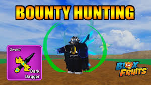

In blox fruits there are sides you can choose to be marines or pirates. Pirates are bounty, marines are honor. Me personally I like the pirates because i like going bounty hunting but you can go bounty hunting on both.
Bounty hunting in Blox Fruits is the act of defeating other players in PvP (Player vs. Player) combat to gain Bounty for Pirates or Honor for Marines. It is the primary way to progress on the game's competitive leaderboards and gain powerful buffs.
